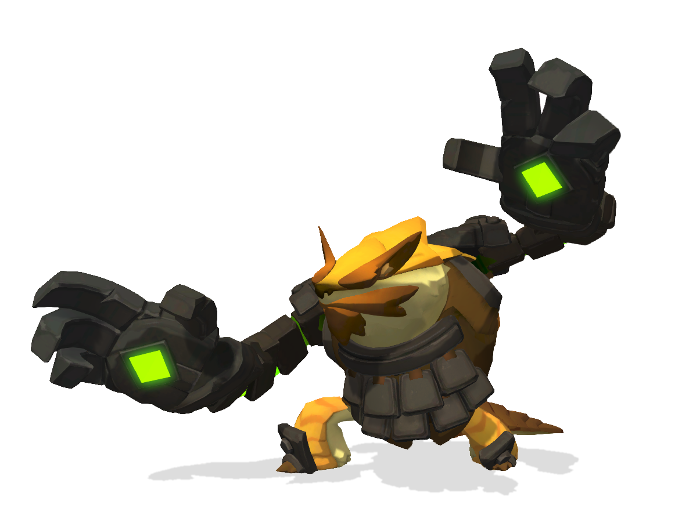

Scroll down to find out more about Rutger!

A brief summary on Rutger:
- Rutger is nature-loving protector of the land and is a attack-type tank
-
His abilities mostly focus on earth manipulation, but surprisingly he is also quite mobile.
-
He doesn’t have a lot of health, but his shield is quite massive.
-
His auto-attack, Digging Claws, helps him maintain this shield as it restores shield per hit, and it can be upgraded to either restore more shield per hit, or to gain armor penetration.
-
His first active ability is called Tremors, and it sends out three shockwaves in front of you, the first two slow and the third one makes spikes come out of the ground and pushes enemies back.
-
You can make this ability have a greater slow or make it deal more damage with the third shockwave.
-
Burrow is one of his best abilities when it comes to escaping, as it allows you to dive into the ground but keep moving in any direction you want while restoring shield.
-
This can be upgraded to give you more shield or to teleport you to a targeted location.
-
His crowd control skill is called Rock Barrier and it allows him to create a stone wall which can stop enemies from passing and also block projectiles.
-
You can upgrade it to either make it last longer, or to make it explode when you destroy it, which is a great way of doing surprise damage in the middle of a team fight.
-
Lastly, we have his Focus ability called Rock and Roll.
-
Besides having an awesome name, this ability is packed with damage, disruption, and mobility, as it allows you to charge up and then roll forward, damaging and knocking back any enemies that you run into.
- Rutger's duty as a warden was to protect the land, whatever the cost. Any Hero or house that failed to respect the sanctity of nature would have to answer to him.
-Rutger
Links
We'll see you on the airship!!